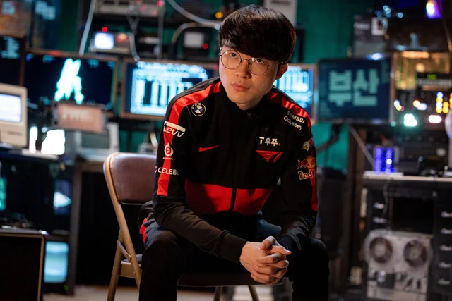

Không phải ngôi sao nào khác, có thể kết quả trận đấu G2 - T1 sẽ do chính CaPs và Faker định đoạt
CaPs và Faker rất có thể sẽ chính là những người định đoạt kết quả trận đấu giữa G2 và T1.
Trận đối đầu giữa G2 Esports và T1 trong chiều ngày 28/05 (giờ Việt Nam) sẽ là cuộc đối đầu tâm điểm của vòng Bán kết MSI 2022 lần này. Nếu cặp đấu Royal Never Give Up - Evil Geniuses thì quá chênh lệch về mặt trình độ giữa 2 đội, thì G2 - T1 lại cân tài cân sức hơn. Ở vòng Hỗn Chiến, 2 đội cũng đang có hiệu số đối đầu 1-1 và trong cả 2 lượt trận, đều gần như không có bên nào tỏ ra chênh lệch hoàn toàn so với đối thủ

Nhưng khi mọi sự chú ý đổ dồn vào những cái tên như Gumayusi - Flakked hay cuộc đối đầu "1 già 1 trẻ" giữa Jankos và Oner, thì rất có thể, chính CaPs và Faker mới là 2 người sẽ quyết định kết quả trận đấu.
Tỷ lệ thắng giữa CaPs - Faker
Theo thống kê, nếu chỉ tính tỷ lệ thắng - thua khi đối đầu với Faker, thì không phải PawN, mà chính CaPs mới đang là tuyển thủ xứng danh "Faker-killer" khi anh này sở hữu đến 69% tỷ lệ thắng khi gặp "Quỷ Vương" (9 thắng - 4 thua). Trong khi đó, PawN cũng chỉ có 50% tỷ lệ thắng khi gặp Faker và hiện tại, PawN cũng đã giải nghệ từ lâu. Trong khi đó, đây có thể xem là giai đoạn CaPs lại trở lại thời đỉnh cao sau những mùa giải không được như mong đợi.
Lối chơi khác biệt
Nếu Faker ở tuổi 26 không còn thường xuyên thực hiện các pha highlight nhưng vẫn đóng góp rất lớn vào chiến thắng chung của cả đội. Cách Faker điều khiển trận đấu được thực hiện qua cách anh macro, đảm bảo giai đoạn đi đường diễn ra tốt nhất có thể để Oner có thể tự do roam gank ở các đường khác, nhất là hỗ trợ Đường Trên của Zeus.
Còn CaPs, anh lại có xu hướng kết hợp với Jankos, cũng như tác động trực tiếp đến trận đấu thông qua các pha thực hiện kỹ năng cũng như liên tục đảo lane. Đó là lý do CaPs có nhiều pha hạ gục hơn Faker, nhưng bản thân anh nằm xuống cũng không ít. Điều này còn thể hiện qua yếu tố: CaPs có 67,2% tham gia vào các mạng hạ gục của G2, trong khi ở Faker là 54,2%. Nhưng Faker lại chênh lệch đến 6,1 chỉ số lính ở 10 phút đầu trận tại MSI 2022. Đây cũng là chênh lệch chỉ số lính cao nhất tại MSI lần này.
Những kỷ lục mà cả 2 hướng đến
Cả G2 và T1 đều có mục tiêu tại MSI 2022. Nếu G2 đánh bại T1 và sau đó có thể vô địch, họ sẽ là đội phương Tây đầu tiên vô địch 2 kỳ MSI. Còn nếu T1 đánh bại G2 thì họ sẽ biến trận Chung kết thành đại chiến Trung - Hàn. Và khi đó, dù RNG hay T1 giành cúp, họ sẽ là đội đầu tiên trong lịch sử LMHT giành chức vô địch MSI 3 lần.
Do đó, đây chắc chắn là trận thư hùng vô cùng hấp dẫn và đều sẽ làm nên lịch sử cho 2 đội nói riêng cũng như làng LMHT nói chung.